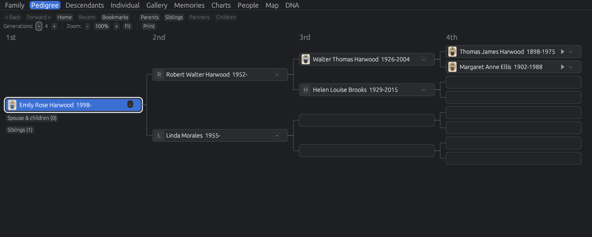
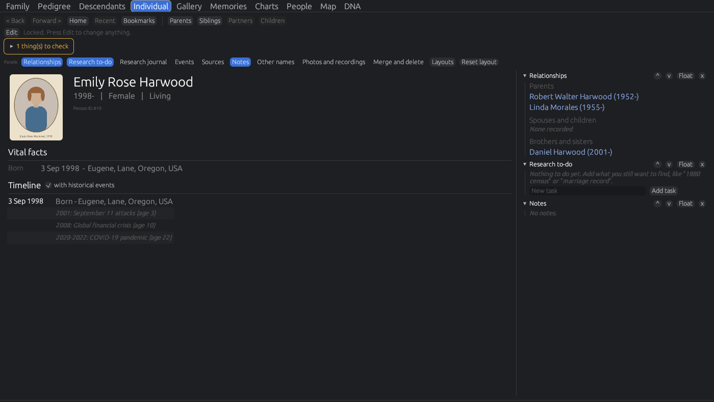
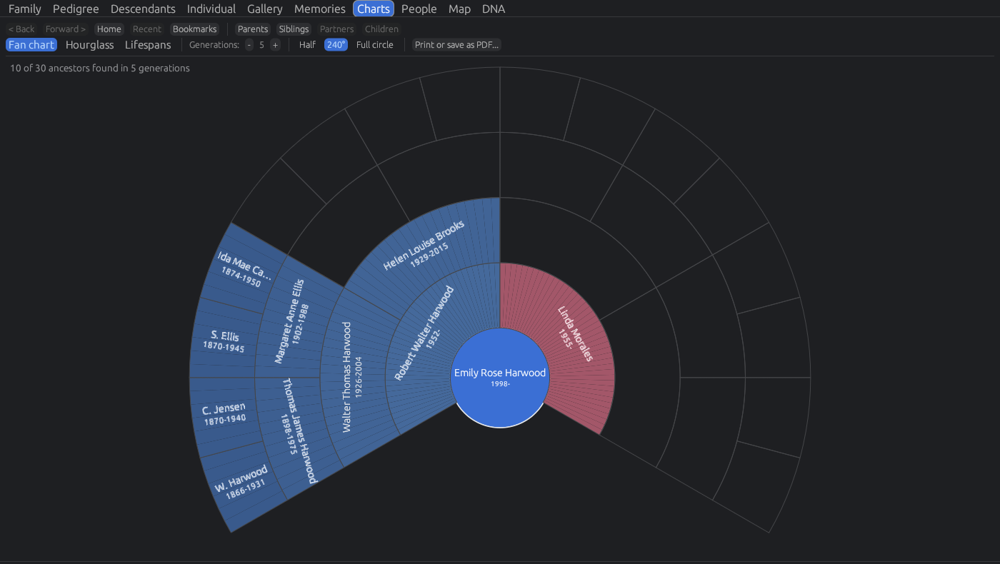
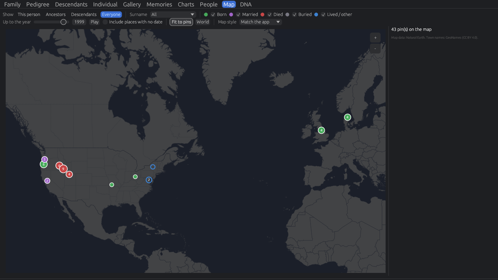

Your family history, kept on your own computer.
Gilded Roots is a modern, easy-to-use family history program in the spirit of the classic desktop genealogy programs. Pedigrees, family group sheets, sources, photos and stories, with no account, no subscription and nothing uploaded.
- Free, no adverts
- Works offline
- Windows, Mac and Linux
- Opens GEDCOM and PAF 5 files

Made for people who loved the classic programs.
Many well-loved desktop genealogy programs, PAF among them, were retired years ago and only ever ran on Windows. Gilded Roots keeps what made them good (Family, Pedigree and Individual views, family group sheets and plain dependable files) and adds what's been missing since.
- Install Gilded RootsDownload it below. It's free.
- Choose “Import an existing family tree”Pick your PAF 5
.paffile, or a GEDCOM (.ged) file from any program. - Read the import reportIt counts every person, family, source and note that came across, and lists anything that didn't.
Your original file is never changed. A PAF 5 .paf file brings in names, dates, places and all family links. For christenings, burials, LDS ordinances, notes and sources, export a GEDCOM from PAF (File › Export) and import that instead.

Moving from another site or program.
Almost every family history website and program can save your tree as a GEDCOM file (it ends in .ged). Save one from where your tree is now, then open Gilded Roots and choose Import an existing family tree. Pick where your tree is now:
- Sign in to Ancestry, click Trees at the top and open your tree.
- Click the More menu (three dots) on the left and choose Tree Settings.
- Under Manage your tree, click Export tree, then Export. Wait while it says “Generating a GEDCOM file”.
- Click Download your GEDCOM file. It downloads as a zip: double-click it to get the
.gedfile inside.
Only the tree's owner can export it, but no subscription is needed. Photos stay on Ancestry: the file holds links to them, which Gilded Roots keeps with an “Open online” button. Download the pictures you want to keep and add them in Gilded Roots.
FamilySearch's Family Tree is one shared tree, and the website has no full GEDCOM export. Instead:
- Bring the people you want into a program that connects to FamilySearch: RootsMagic or Ancestral Quest (Windows and Mac), or Legacy Family Tree (Windows). Each has a free version; check on its website which features it includes.
- In that program, choose File › Export and save a GEDCOM file.
Sources usually have to be brought across person by person. FamilySearch's “Download your family tree” page may also save a GEDCOM of your direct ancestors.
- Sign in to MyHeritage, point to Family tree at the top and choose Manage trees.
- Next to your tree, click Export to GEDCOM.
- Choose whether to include photos, click Begin the export, and download the file when it's ready.
Photos come across as links to MyHeritage, not the pictures themselves.
- Sign in to Findmypast, open Family tree at the top and choose to view all your trees.
- Click the export icon next to your tree.
- When the file is ready, click Download tree.
- Choose File › Export.
- Choose Entire file, and pick a GEDCOM option under Output format.
- Click OK, choose where to save it, and click Save.
Keep your tree's media folder next to the .ged file so the photos come across.
The quick way: choose your PAF 5 .paf file directly. Names, dates, places and all family links come across.
The full way, for christenings, burials, LDS ordinances, notes and sources:
- In PAF, choose File › Export.
- Pick GEDCOM 5.5, and tick Include notes, Include sources and Include multimedia links.
- Save the
.gedfile, with your photo folder next to it.
RootsMagic, Legacy, Ancestral Quest, Gramps, Family Historian, Heredis, MacFamilyTree and most other programs can save a GEDCOM file:
- Choose File › Export (in Legacy, File › Export File).
- Choose GEDCOM, include everyone, notes and sources, and save the file.
Keep any photo folder next to the .ged file, and Gilded Roots copies in the photos it finds.
Then, in Gilded Roots: choose Import an existing family tree (or File › Import tree) and pick the file. The import report shows exactly what came across. Websites change their menus now and then: if a step doesn't match, look for Export or Download GEDCOM near your tree's settings.
See your family at a glance.
- Pedigree, family, descendant and individual views
- Fan, hourglass and lifespan charts
- Printable family group sheets and pedigree charts
- Blank forms to fill in by hand, including LDS versions and census worksheets for the US, Canada and England and Wales

Where your family lived.
- Births, marriages, deaths and burials pinned on a map that works offline
- Show one person, their ancestors, descendants or everyone
- Play through the years to watch the family move
- Map colours that match the look you choose for the app

Real sources
Reusable source records, citations with page numbers, transcriptions and quality ratings, attached to people, events and families.
DNA
Ethnicity on a map, match lists with a “How related?” guide, and Y-DNA and mtDNA with the direct line drawn through your tree. Imports match lists from the big testing companies.
Tombstone calculator
“Aged 72 years, 3 months, 10 days”? Enter the death date and age from a gravestone and get the birth date.
Photos and stories
Photos with faces tagged, documents, a built-in PDF viewer, and family stories recorded in your relatives' own voices.
Research tools
To-do lists, a research journal, a duplicate finder that asks before merging, a data checker and a places explorer that tidies up spellings.
Real families
Adoptive, step, foster and guardian parents kept separate from birth parents, several marriages, and godparents and other associations.
Safe by design
Every save is checked, the previous version is kept, and daily backups are kept for two weeks, with a second copy on a USB drive if you like.
Portable
A version that runs from a USB stick with your tree beside it. Plug it into any computer; nothing is left behind.
Family history is personal. It stays yours.
No account
Install it and start. No sign-up, no email address, no subscription.
Nothing uploaded
The program never contacts a server. Your tree, photos and documents stay in a folder on your computer.
Open format
Your tree is kept in a visible folder in an open format, and exports to GEDCOM for any other program.
Living people protected
Printouts and GEDCOM exports can keep living relatives' details private.
Free for Windows, Mac and Linux.
Always the latest version. See all releases and what changed.
Mac
Download for Apple chip Download for Intel MacApple chip means M1 or newer (most Macs since 2021). Not sure? Apple menu › About This Mac: “Chip: Apple M…” means Apple chip; “Processor: Intel” means Intel.
Portable: Apple chip · Intel
Opening it the first time
- Open the downloaded file and drag Gilded Roots into Applications.
- Open it. macOS says it can't check the developer, because the app isn't signed by Apple. Click Done.
- Open System Settings › Privacy & Security, scroll down and click Open Anyway next to Gilded Roots, then confirm.
You only need to do this once. On older versions of macOS you can instead right-click the app and choose Open.
Windows
Download for WindowsWindows 10 or 11, 64-bit.
Portable: zip for a USB drive
Opening it the first time
- Run GildedRoots-Setup.exe.
- If Windows shows “Windows protected your PC”, click More info, then Run anyway. This appears because the installer isn't signed.
- Follow the installer. Gilded Roots appears in the Start menu.
Linux
Download .debUbuntu, Debian, Mint and similar, 64-bit.
Portable: tar.gz for a USB drive
Installing
- Double-click the
.debto open it in your software centre, or runsudo apt install ./GildedRoots-linux-amd64.deb - Gilded Roots appears with your other applications.
Good to know.
Is it really free?
Yes. No adverts, no subscription, no paid version. It's open source under the MIT licence. Donations are welcome but entirely optional.
Where is my family tree kept?
In a folder called Gilded Roots inside your Documents folder: your tree, photos, documents and backups. You can move it from inside the program. If that folder is in iCloud, OneDrive or Dropbox, the program warns you, because live syncing can clash with saving.
Can I bring my tree from Ancestry, FamilySearch, MyHeritage or another program?
Yes. See Bring your tree above for the steps for each site and program. PAF 5 .paf files can be opened directly.
Will it change my PAF file?
No. Gilded Roots only reads it. Your PAF file stays exactly as it was, and you can import it again at any time.
Does it record LDS ordinances?
It brings them in from GEDCOM files and keeps them, and the printable family group sheet and pedigree chart come in LDS versions with ordinance boxes.
Does it need the internet?
No. Everything works offline, including the map and the user guide. The program never connects to a server.
Why does my computer warn me when I open it?
Windows and macOS warn about programs that aren't signed with a paid developer certificate. Gilded Roots is a free, independent project, so the installers aren't signed. The steps under each download show how to open it.
Is it connected to FamilySearch or the Church?
No. Gilded Roots is an independent project and isn't affiliated with or endorsed by FamilySearch, The Church of Jesus Christ of Latter-day Saints, Ancestry, MyHeritage or any other company. PAF is mentioned only to describe compatibility.
I found a problem. Where do I report it?
On the Issues page. Say which computer and version you're using (Help › About) and what you were doing. Please don't attach your real tree: it contains details of living people. A screenshot is usually enough.
Enjoying Gilded Roots?
It's free, and always will be. If it's helped you and you'd like to support its development, a small donation, even $5, is very much appreciated. Donations are voluntary gifts; they don't buy features or support.
Donate with PayPal